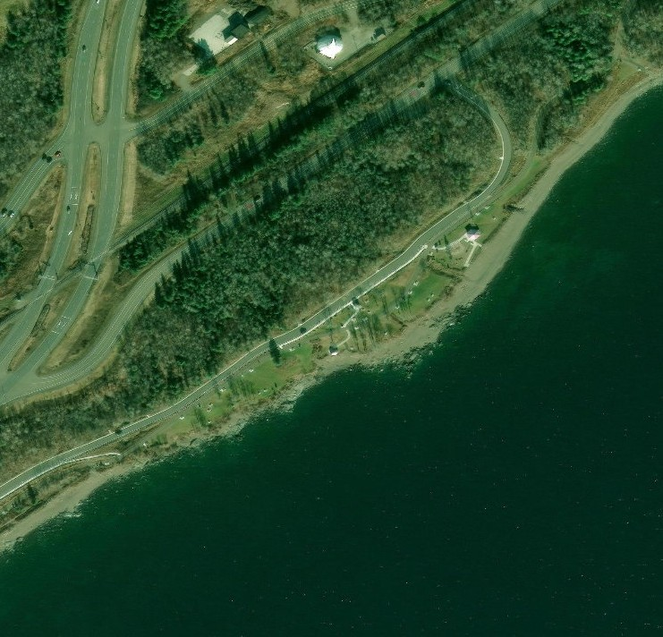

N
LEGEND
Fixture layers are marked SIMULASI.
Imagery © Esri
NASA FIRMS · NRT
—

MISSION CONTEXT
Province
—
- ISO
- —
- Land area
- —
—
detections · 5 days
Imagery · next slice
Site context
—
- Terrain
- —
- Imagery
- —
- Fires near
- —
- Spread
- —
Spread model
—
+0 min
Site context
Building 18 km terrain…